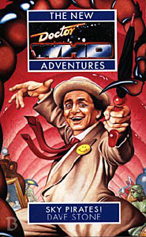

|
Sky Pirates!
|
BASIC PLOT DOCTOR COMPANIONS MATERIALISATION CIRCUIT Pg 70 On the Sloathe ship, inside the Sloathe captain. Pg 73 On Planet X. PREPARATORY READING CONTINUITY REFERENCES Pg 22 "Progressively weirder variations upon the theme of Cargo-hold in a Space Station." This description of bits of the deep interior of the TARDIS owes itself to The Invasion of Time. Pg 23 "She had thrown over the privileges of being born into an ultra-rich, hi-level Overcity family to join the Adjudicators." Original Sin, and we meet that family in So Vile a Sin. But also see Continuity Cock-Ups. "Her own partner of fifteen years had betrayed her." Fenn Martle, as described in Original Sin. We meet Martle in flashback in Oblivion. Pg 35 "Recent exposure to the Hithis ship." Original Sin. Pg 36 "'The Doctor,' Benny said with an exaggerated sigh, 'has decided that we all need a holiday. Bags of relaxation, ducky, no excitement - which leaves whole humungous lumps of history like the various Dalek, Draconian, Solarian, Trigorian, Chlamedian, Cyberman and Altairian XIV Bog-woppet expansions out for a start.'" The holiday thing has been running on and off since White Darkness. The other references include Daleks and Cybermen, which you know about, of course; Solarians, from a 1966 novel by Spinrad; Trigorians, which I struggle to find a reference for; Draconians from Frontier in Space; Altairian, which is a mis-spelled Star Trek reference (Future Imperfect); and Chlamedian which is, um, a sexually-transmitted disease reference, I think. Pg 39 "This era of Gallifreyan history became retroactively known as the Time Wars, and during that segment of subjective Gallifreyan timeline entire future species and whole orders of species were eradicated." Gosh; doesn't that sound familiar nowadays? Pg 48 "Mad Jack Bumfrey and the dowager duchess of Hokesh." Stone would go on to explore Hokesh in Citadel of Dreams. Pg 63 "The TARDIS was literally tumbling through the infraspacial vortex of the Implicate." As in the precredits for Time and the Rani and, indeed, the seventh Doctor's theme sequence. Pg 66 "Are we heading for Event One, Tegan?" Castrovalva. There's also reference to the Zero Room from the same story. Reference to Jamie. The description of Tegan states that she "can't resist pulling a big red knob" which is a reference to Four to Doomsday. Pg 67 "He was doing it [his Musical bloody Companions routine] when I first met him." Love and War. "'Damn. They didn't get her,' said an uncharacteristically short-tempered and vaguely disappointed Doctor. 'I'm still stuck with that irritating blasted pitch-perfect screech...'" A reference to Mel, with the rather amusing idea that the Doctor spent all his time with her trying to get her killed. Reference to the Cloister Bell from Logopolis and at least half the New Adventures thus far. Pg 70 "Yo-ho-ho and a bottle of rather fine and sparkling Oolonian Chablis." It's a Hitch-hikers reference, which also pops up in Destiny of the Daleks, sadly. Pg 80 FLORANCE, from Transit and, later, SLEEPY, gets a mention. But see Continuity Cock-Ups. Pg 99 Another reference to Draconians from Frontier in Space and to Silurians, from Doctor Who and the Silurians et al. Pg 100 Reference to Daleks and Cybermen and the Dalek Wars that formed the backdrop of Love and War. "Interspecieal how's-your-father" This is very much how Dave Stone would introduce Jason in Death and Diplomacy. Pg 109 "Learnt in the time that she had been drafted into the Dalek Wars" As we learned in Love and War. Pg 110 "'We have to get out of here or we're going to end up asking for a slice off the leg or the breast and really meaning it. Donner kebab, anyone, know what I mean?' 'I regard that remark as being in the worst possible taste,' said the Doctor sternly. 'Take it from one who knows.'" A very obscure reference to The Two Doctors. Pg 112 "Manipulating people and maneuvering them into the right place at the right time. Next thing we know, we'll have a pyrotic in a big skin balloon full of methane, just when it needs to be exploded or something." A magnificently condemnatory reference to Love and War. Pg 124 "'In my time,' the Doctor said, 'I have come up against Daleks, Draconians and acid slugs down a coal-mine. Cybermen have been known to break out the gold dust at the mere mention of my name. Time and again I have bested the Master in a battle of wits - which I fancy says not a little for my cognitive abilities, sartorial tastes and all-round general spunkiness.' He took a deep breath. 'Hoothi, Solarians, Greki, Sea Devils, Yeti, Silurians, Nazis, corporate arcologies, bogiemen, vampires, bodysnatchers and Bog-woppets from Altair XIV have variously known what it means to be my enemy or my friend. I am the Doctor. The Doctor is me. Who do you think it was,' he said with a little smile and his fingers crossed behind his back, 'who gave the Clangers their big break?'" Oh, for goodness' sake. The Daleks et al, Frontier in Space et al, The Green Death, The Tenth Planet et al, Terror of the Autons et al, Love and War, Isaac Asimov's Foundation and Robot books, not sure, The Sea Devils and Warriors of the Deep, The Abominable Snowmen et al, Doctor Who and the Silurians et al, Timewyrm: Exodus, could be anything, could be everything, State of Decay et al, Terror of the Zygons et al and another Dave Stone reference which he comes back to in, amongst others, Death and Diplomacy and Ship of Fools. Oh, and the Clangers appeared in The Sea Devils. Phew. Pg 157 "Nobody would find themselves at a loose end on Saturday nights." Reference to Doctor Who's broadcast slot of old (and new). Pg 193 "There are the Rootlands, where live the hamadryads and blindy-eyed kobolds and the Morlocks with their moleskin trousers." Timelash, possibly. Pg 251 "And it continued to trouble her until she realized that the relationship was in fact more like Ace, a previous companion of the Doctor's, and her bloody cats." Survival (maybe) and Warlock (definitely). Pg 252 "Three-odd subjective years before, when she had first met him, Benny had seen an entirely avoidable tragedy take place, simply because the Time Lord had secretively neglected to relate a vital piece of information." Love and War, and something of a harsh (if not unfair) judgement upon it. Pg 275 "Benny and Roz passed on, as we all of us must eventually do, but for the moment they merely continued on their way." This may be a subtle foreshadowing of So Vile a Sin, but it might not be at all. Pgs 275-276 "The only so-called 'adventure' I know about is the one that ended with my life and my career in shreds, the memory of the man I loved befouled, half the world I knew reduced to smoking rubble and the strong possibility of Cwej degenerating into a ravenously murderous maniac at any minute." A pretty accurate summary of Original Sin. Pg 280 "You have squandered any last chance of mercy I might have allowed you." Foreshadows School Reunion. Pg 292 "Entire species, whole orders of species that might pose a threat were quite simply eradicated. That is our greatest shame - mine in particular." The "mine in particular" may be a reference to Remembrance of the Daleks and the Hand of Omega. Pg 305 Brief mention of Ice Warriors. Pg 313 "The police-box exterior-interface of the TARDIS plunged shrieking, its beacon flashing, into the inrush of hydrogen that would result in Event One." Castrovalva. This is the first of several things which are the TARDIS's greatest fears. The others appear to be the Master taking it over, the death of the Fourth Doctor and the Sixth Doctor becoming the Valeyard. OLD FRIENDS AND OLD ENEMIES NEW FRIENDS AND NEW ENEMIES An Tleki, Yani, Hoch, Kos and Kai. Sgloomi Po.
CONTINUITY COCK-UPS PLUGGING THE HOLES [Fan-wank theorizing of how to fix continuity cock-ups] FEATURED ALIEN RACES Pg 30 Renegade degenomancers from the Rubri methane boglands. Pg 30 Reklonian hunter-gatherers. Pg 38 The Daleks actually appear in an NA! Very, very briefly. Pg 51 A creature, the last of its kind, which should have been retroactively destroyed before its very existence by the Time Lords. Pg 82 Six is a polymorph with an autonomic 'sting' reflex which shows you the thing you're most frightened of in the whole universe. Pg 99 Mama Roca is a frog-like amphibian. Pgs 152-153 Ice words, heat-seeking, hot-blooded snakes with ice-cutters and shovels as tiny, vibrating limbs. As you do. Pg 189 Vampire chickens. Pg 191 Jackals, wearing bowler hats and carrying daggers. Pg 193 Hamadryads, kobolds and Morlocks. Pg 196 Talking tigers. Pg 203 A Snata, which is, in essence, an evil, animalistic Santa Claus. It's an abhorravore, feeding on horror and revulsion. Pg 212 Crocogators, which breathe through reeds that look like striped straws. Pg 224 A hideous, saurian-like creatures that defies description. It's called the eating thing. Pg 292 The Charon, a race wiped out pre-emptively by the Time Lords a long time ago, except the one that was hidden in what would become the System. It presents to the eye as an absence, because it's so horrific. FEATURED LOCATIONS Pg 1 Planet X, homeworld of the hideous Sloathes. Pg 9 The jungle Wanderer Aneas, upon which one would find dirigible cities, the Anacon River and the sub-city of Rokath. Pg 25 The water Wanderer Elysium. Pg 25 The Ring, which is full of LSD. Pg 30 Sere, the largest body in the Ring. Pg 43 Prometheus, a desert world. Pg 46 Reklon, the ice planet. Pg 117 The Notional Dragon, a pub. Pg 120 The Free Trader Schirron Dream. Pg 155 The Valley of the Scorpions of Glass on Prometheus. Pg 251 The pontoon city of Marloon. Pg 295 Inside the System's sun. IN SUMMARY - Anthony Wilson |
|
 |